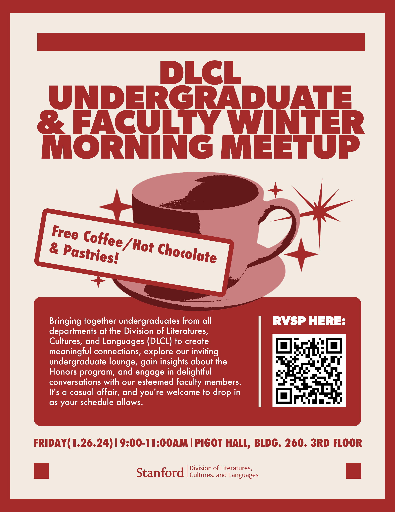
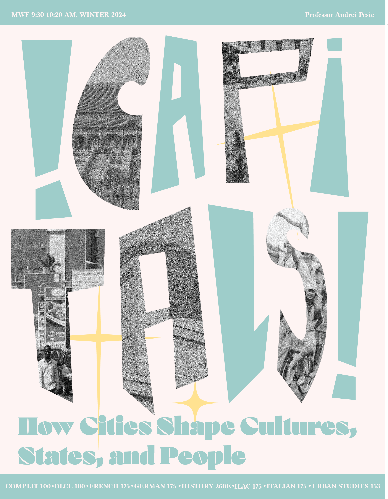

I'm passionate about developing ML learning theory in light of strategic and social interactions: specifically, I'm excited to intersect topics from game theory and statistics in order to inform more robust and fair algorithms!
Currently, I'm a Master's student in Management Sciences & Engineering at Stanford, where I have the privilege to be mentored by Lee Cohen and Professor Omer Reingold.
During my undergraduate studies, I extended work in strategic classification to design algorithmic interventions that enhanced both accuracy and fairness in resume-screening systems, accounting for the potential use of LLMs by job applicants.
Previously, I've also built AI-Agent evaluation tools with Runloop AI, and OCR pipelines for the U.S. Census Bureau.
Cohen, L., Hsieh J., Hong, C., Shen, J.
ICML 2025, Swap Regret and Strategic Learning Workshop @ EC 2025
Hong, C.
Data Science B.S. Capstone Project (2025).
Spatiotemporal Modeling of Chicago Traffic Accidents with Convolutional and LSTM Networks.
Gu, Z., Hong, C, Torrecilla, I.
Final Project for CS 229: Machine Learning (2024).
Currently, I'm a Master's student in Management Sciences & Engineering at Stanford, where I have the privilege to be mentored by Lee Cohen and Professor Omer Reingold.
During my undergraduate studies, I extended work in strategic classification to design algorithmic interventions that enhanced both accuracy and fairness in resume-screening systems, accounting for the potential use of LLMs by job applicants.
Previously, I've also built AI-Agent evaluation tools with Runloop AI, and OCR pipelines for the U.S. Census Bureau.
Research Interests
Economics and Computation, Algorithmic Fairness, Machine Learning Theory.
Publications
Two Tickets are Better than One: Fair and Accurate Hiring Under Strategic LLM Manipulations.Cohen, L., Hsieh J., Hong, C., Shen, J.
ICML 2025, Swap Regret and Strategic Learning Workshop @ EC 2025
Misc. Writing
How Do Disparities Emerge? Unpacking Confidence and Accuracy Gaps by Gender and Socioeconomic Status.Hong, C.
Data Science B.S. Capstone Project (2025).
Spatiotemporal Modeling of Chicago Traffic Accidents with Convolutional and LSTM Networks.
Gu, Z., Hong, C, Torrecilla, I.
Final Project for CS 229: Machine Learning (2024).
Teaching
I'm a current CA for MATH51: Linear Algebra and Multivariable Calculus as a part of Stanford's ACE Program, which allows me to foster my passion for making mathematics accessible to all!



